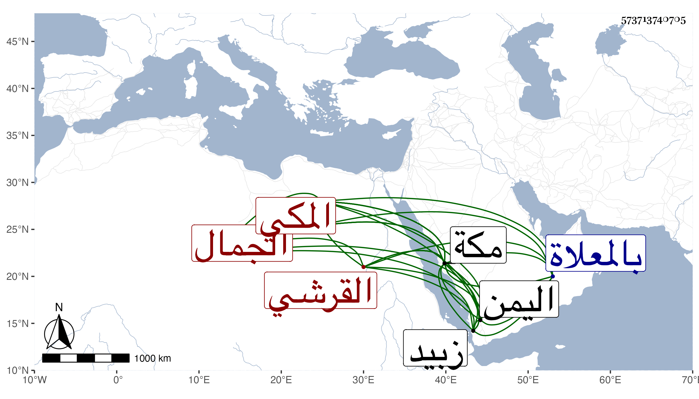

0902Sakhawi.DawLamic.ITO20230111-ara1.EIS1600.573713740705
Biography ID: 573713740705
133
محمد بن عبد الكريم بن أحمد بن عطية بن ظهيرة الجمال القرشي المكي ويعرف كسلفه بابن ظهيرة وهو بأبي سمنطح ، وأمه حبشية فتاة أبيه . ولد في آخر حياة أبيه أو بعد وفاة أبيه بمكة ونشأ بها وأجاز له في سنة إحدى وسبعين وسبعمائة فما بعدها الأذرعي وابن كثير والكمال بن حبيب وخلق ، وتردد إلى اليمن بعد بيع كثير مما ورثه من أبيه وتزوج في زبيد وغيرها وانقطع عن الحج في غالب السنين . مات في المحرم سنة ثلاث وعشرين بمكة بعد أن تعلل ، ودفن بالمعلاة وقد جاز الخمسين بسنين ، ذكره الفاسي بمكة ثم ابن فهد ، ورأيت من أرخه سنة سبع وعشرين وسمي جده محمد بن أحمد .
